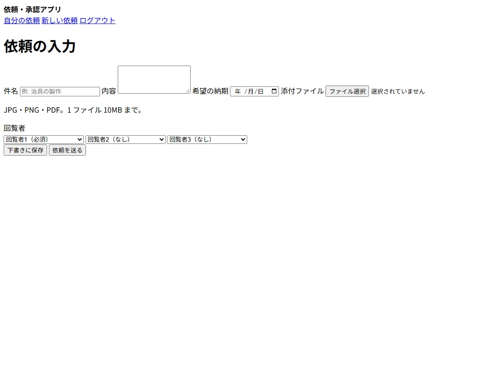
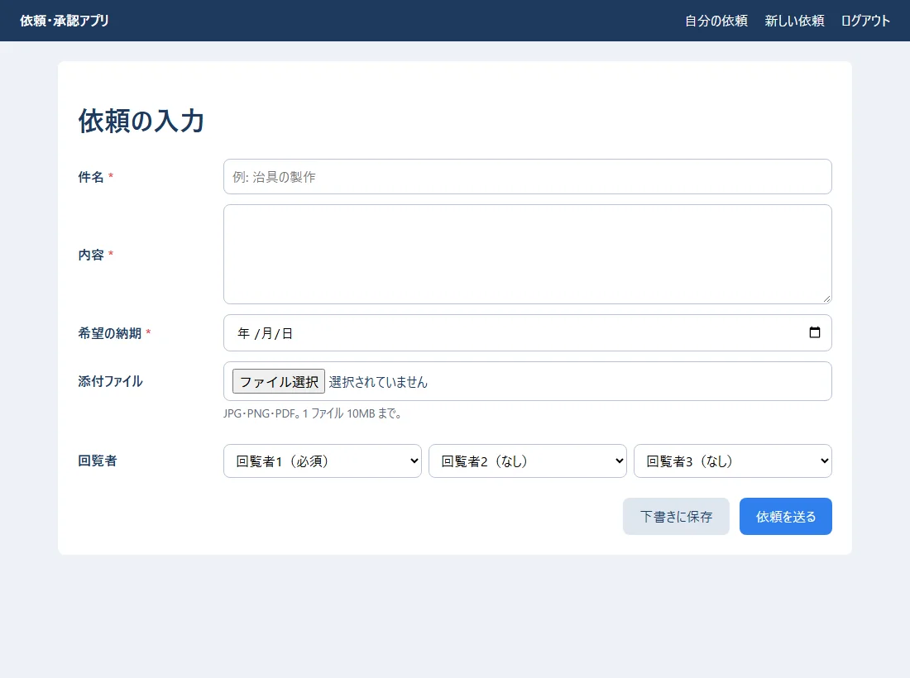
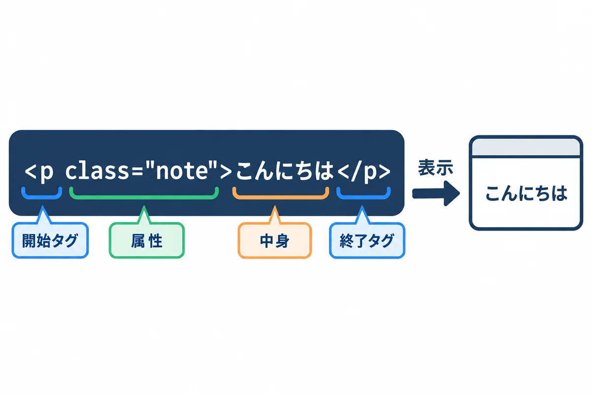
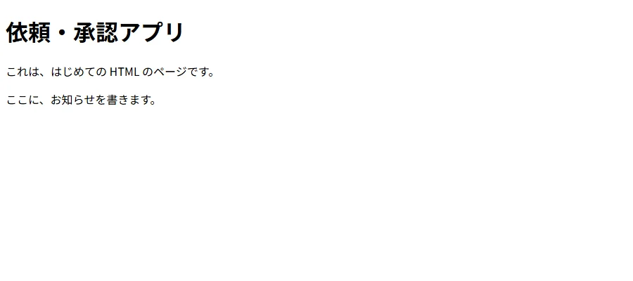
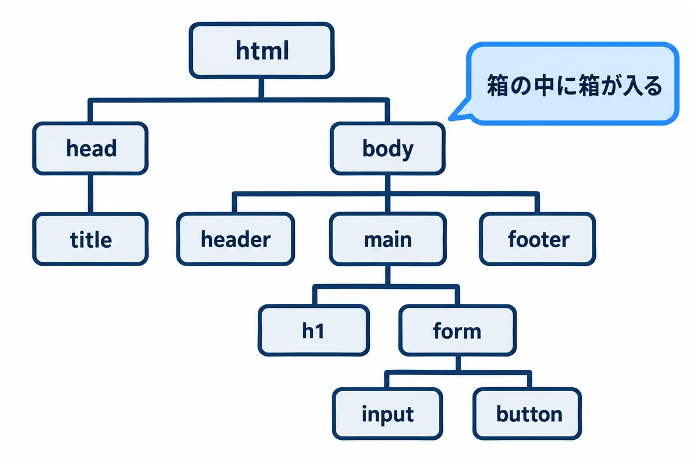
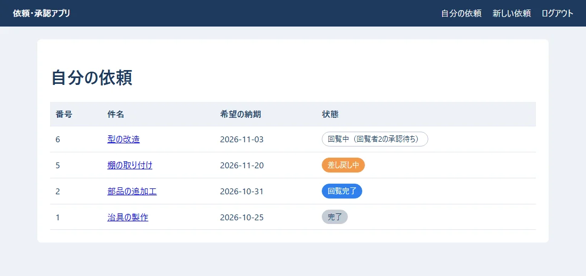
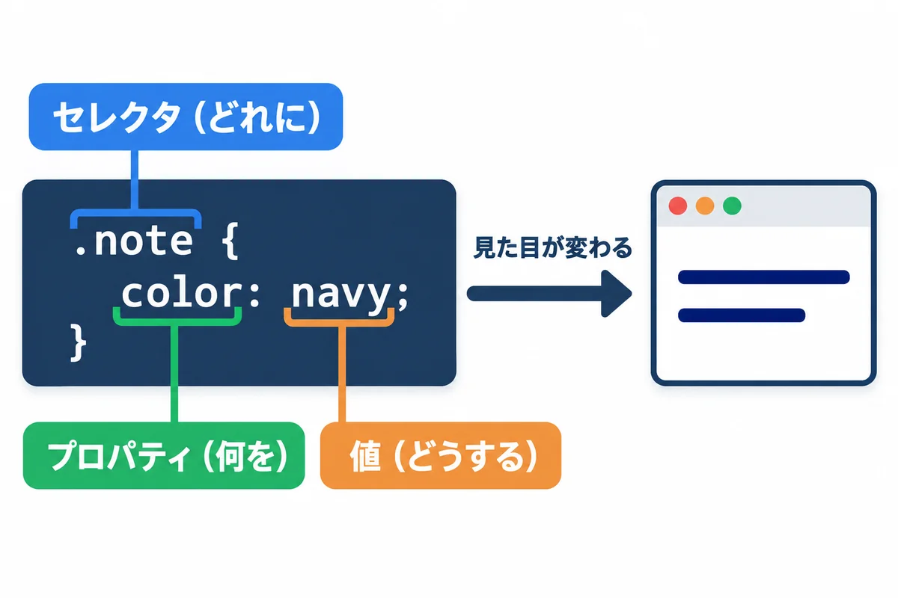
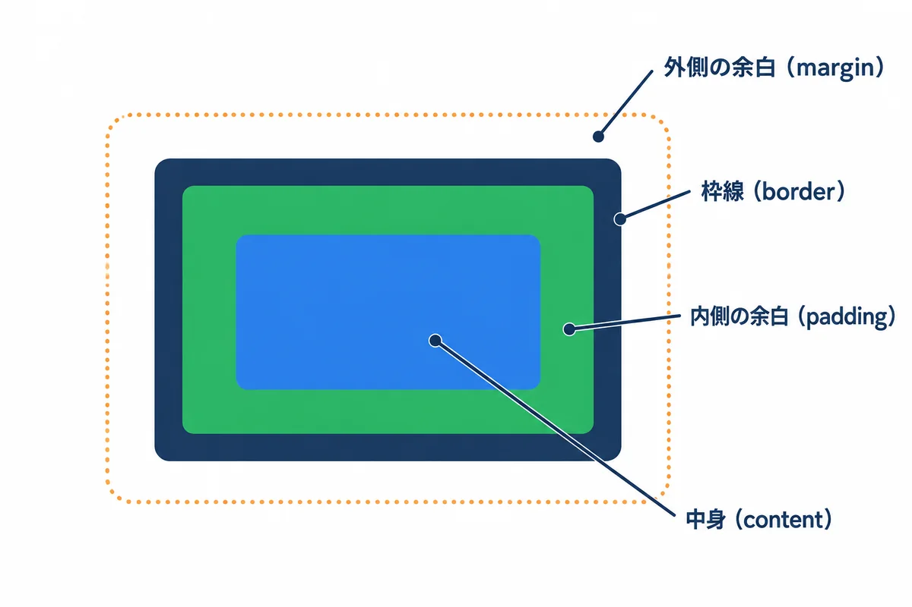
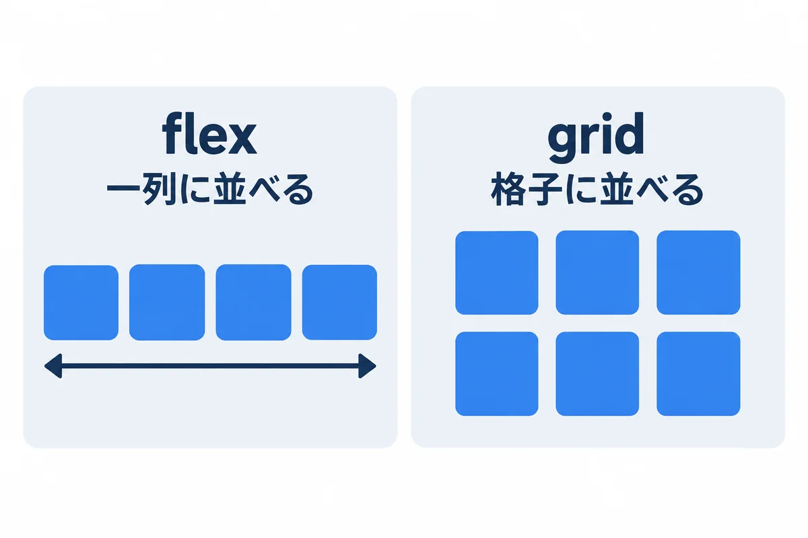
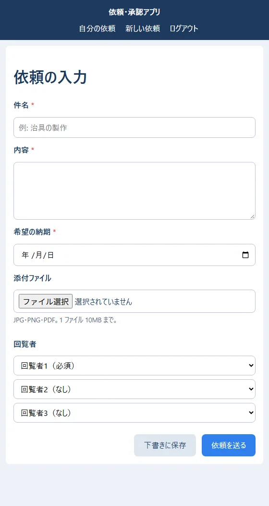

色の付いた枠のコードの、右上の「コピー」ボタンを押してください。コピーしたら、PDF を見ていた画面に戻ります（ブラウザーで PDF を見ていた時は「戻る」、VS Code で見ていた時は VS Code の窓に切り替えます）。
練習のファイルは samples/01_html_css/ にあります。ファイルをダブルクリックすると、ブラウザで開けます（サーバーは要りません）。この巻の画面の写しは、そのファイルを Chrome で開いて撮った本物です。
もっと詳しく:
kosu/03_Web基礎_HTML_CSS.mdに、HTML と CSS の、より詳しい説明があります。
| 言葉 | 受け持ち | たとえ（家） |
|---|---|---|
| HTML | 中身と骨組み（見出し・文・入力欄・ボタン・表） | 柱と部屋と家具 |
| CSS | 見た目（色・大きさ・余白・並べ方） | 壁紙・ペンキ・家具の配置 |
| JavaScript（TypeScript） | 動き（ボタンを押したら何かする） | 電気の配線・スイッチ |
同じ HTML でも、CSS があるかどうかで、見た目が大きく変わります。


用語: HTML（エイチティーエムエル。HyperText Markup Language：Web の画面の中身を、タグという印で書く言葉）
用語: CSS（シーエスエス。Cascading Style Sheets：画面の見た目を決める言葉）

こんにちは の、開始タグ・属性・中身・終了タグ" style="width: 100%;"><p> が開始タグ、</p> が終了タグです。間に中身を書きます。p は「段落（paragraph）」という意味です。class="note" のような物を属性と呼び、タグに追加の情報を付けます。<input> や <meta> のように、中身を持たず、終了タグの無いタグもあります。▶ 準備: 00 の 6.1（資料のフォルダと PowerShell）と 6.2（VS Code）。
▶ 書く所と見方:
mkdir ~\Documents\my-practice\01
cd ~\Documents\my-practice\01
code .
▶ ここで初めて出てくるコード
mkdir（PowerShell）: 「make directory（フォルダを作る）」の略。mkdir ~\Documents\my-practice\01のように、途中のフォルダもまとめて作れます（~はホームフォルダC:\Users\you）。もう同じ名前のフォルダがあると、エラーで知らせます。
hello.html と打って Enter キーを押します。Ctrl ＋ S で保存します。explorer . と打つと、このフォルダがエクスプローラーで開きます。hello.html をダブルクリックすると、ブラウザで開きます。F5 キー（読み込み直し）を押します。保存を忘れると、画面は変わりません。完成したファイルは、資料のフォルダの webapp_learning\samples\01_html_css\hello.html にあります。読んで開くだけなら、それをダブルクリックしてもかまいません。
samples/01_html_css/hello.html:
<!doctype html>
<html lang="ja">
<head>
<meta charset="utf-8">
<title>はじめての HTML</title>
</head>
<body>
<h1>依頼・承認アプリ</h1>
<p>これは、はじめての HTML のページです。</p>
<p class="note">ここに、お知らせを書きます。</p>
</body>
</html>
▶ ここで初めて出てくるコード
<html>（HTML）: HTML の文書全体を包むタグ。<html lang="ja">のlang="ja"は「日本語の文書」という印で、読み上げソフトや翻訳に使われます。中に<head>（ページの情報）と<body>（画面に出す中身）を入れます。<head>（HTML）: ページの「情報」を書く所。題名（<title>）・文字コード（<meta charset="utf-8">）・CSS の読み込み（<link>）などを書きます。ここに書いた物は、画面の本文には出ません。<meta>（HTML）: ページの情報を書くタグ。<meta charset="utf-8">は文字コード（日本語が化けないように必ず書く）、<meta name="viewport" content="width=device-width, initial-scale=1">はスマホでも画面の幅に合わせて表示させる決まり文句です。閉じタグはありません。<title>（HTML）: ブラウザーのタブに出る、ページの題名のタグ。<head>の中に書きます。<body>（HTML）: 画面に出す中身を全部入れるタグ。見出し・段落・フォームなどは、全部この中に書きます。<h1>（HTML）: いちばん大きな見出し（heading 1）のタグ。数が大きいほど小さな見出しになります（<h2>〜<h6>）。<h1>は、1 ページに 1 つにします。<p>（HTML）: 段落（paragraph）のタグ。ひとまとまりの文を囲みます。段落と段落の間には、自動で少し間が空きます。<!DOCTYPE html>（HTML）:<!DOCTYPE html>は、「これは今の HTML（HTML5）で書いたページです」という、ページのいちばん最初に書く宣言です。大文字でも小文字（<!doctype html>）でもかまいません。lang=（HTML）:<html lang="ja">のlangは、ページの言葉（jaは日本語、enは英語）です。読み上げソフトの読み方や、ブラウザーの翻訳の判断に使われます。charset=（HTML）:<meta charset="utf-8">のcharsetは、ページの文字の符号（エンコーディング）です。いつもutf-8にしておくと、日本語が文字化けしません。class=（HTML）:classは、タグに付ける「グループの名前」です。CSS で.note { … }と書くと、class="note"の物全部に、同じ見た目が付きます。class="note done"のように、空白で区切っていくつも付けられます。

| 行 | 意味 |
|---|---|
<!doctype html> |
「これは今の HTML で書いています」という宣言。いつも 1 行目に書く |
<html lang="ja"> |
ページ全体。lang="ja" で日本語のページだと伝える（読み上げソフトなどが使う） |
<head> |
ページの情報（画面には出ない）。文字コード・題名・CSS の読み込みなど |
<meta charset="utf-8"> |
文字コードは UTF-8。これが無いと文字化けすることがある（onprem の 00 基礎知識 0.4） |
<title> |
ブラウザのタブに出る題名 |
<body> |
画面に出る中身 |
<h1> |
いちばん大きな見出し（h1〜h6 の 6 段階） |

タグの中に、別のタグを入れられます。内側のタグは、外側のタグより先に閉じます（<p><strong>…</strong></p> は正しい、<p><strong>…</p></strong> は間違い）。ブラウザは、HTML を読んで、この木の形の構造（DOM）を作ってから、画面に描きます。
用語: DOM（ドム。Document Object Model：ブラウザが HTML から作る、タグの木の形の構造。JavaScript は、この DOM を書きかえて画面を変える）
| タグ | 意味 | 練習アプリでの使い道 |
|---|---|---|
<header>・<main>・<footer>・<nav> |
ページの上の帯・中心・下の帯・行き先の並び | 上の帯とメニュー |
<h1>〜<h3> |
見出し | 画面の題名 |
<p> |
段落 | 説明の文 |
<a href=".."> |
別のページへの案内（リンク） | 一覧の件名から詳細へ |
<ul>・<li> |
箇条書き | お知らせの一覧 |
<table>・<tr>・<th>・<td> |
表・行・見出しのマス・中身のマス | 依頼の一覧 |
<form> |
入力をまとめて送る | 依頼の入力 |
<label>・<input>・<select>・<textarea> |
入力欄の名前・1 行の入力・選ぶ・何行もの入力 | 件名・回覧者・内容 |
<button> |
ボタン | 依頼を送る |
<span>・<div> |
意味の無い、ただの入れ物（小さい・大きい） | 状態の札・並べ方のまとまり |
意味のあるタグを使う: 見た目が同じでも、
<div>だらけにせず、見出しは<h1>、表は<table>のように、意味の合ったタグを使います。読み上げソフトを使う人や、検索、後から読む人が、ページの構造を理解しやすくなります。
▶ 書く所と見方: 2.2 と同じフォルダに request_form.html を作ります。この画面は、見た目を style.css（5〜7 章で説明する CSS のファイル）から読み込みます。資料の webapp_learning\samples\01_html_css\style.css を、同じフォルダに写してから（エクスプローラーでコピーして貼り付け）、request_form.html をダブルクリックで開きます。style.css が同じフォルダに無いと、色も並べ方も無い、文字だけの画面になります。
samples/01_html_css/request_form.html:
<!doctype html>
<html lang="ja">
<head>
<meta charset="utf-8">
<meta name="viewport" content="width=device-width, initial-scale=1">
<title>依頼の入力 - 依頼・承認アプリ</title>
<link rel="stylesheet" href="style.css">
</head>
<body>
<header class="site-header">
<strong>依頼・承認アプリ</strong>
<nav>
<a href="request_list.html">自分の依頼</a>
<a href="request_form.html">新しい依頼</a>
<a href="#">ログアウト</a>
</nav>
</header>
<main>
<h1>依頼の入力</h1>
<form action="/requests" method="post" enctype="multipart/form-data">
<div class="form-grid">
<label for="title" class="required">件名</label>
<input id="title" name="title" type="text" maxlength="100" required placeholder="例: 治具の製作">
<label for="detail" class="required">内容</label>
<textarea id="detail" name="detail" rows="4" required></textarea>
<label for="due" class="required">希望の納期</label>
<input id="due" name="due_date" type="date" required>
<label for="files">添付ファイル</label>
<input id="files" name="files" type="file" accept=".jpg,.jpeg,.png,.pdf" multiple>
<p class="hint">JPG・PNG・PDF。1 ファイル 10MB まで。</p>
<label>回覧者</label>
<div class="approvers">
<select name="approver1" required aria-label="回覧者1">
<option value="">回覧者1（必須）</option>
<option value="101">山田 太郎（設計部 課長）</option>
<option value="102">佐藤 花子（設計部 係長）</option>
</select>
<select name="approver2" aria-label="回覧者2">
<option value="">回覧者2（なし）</option>
<option value="101">山田 太郎（設計部 課長）</option>
<option value="102">佐藤 花子（設計部 係長）</option>
</select>
<select name="approver3" aria-label="回覧者3">
<option value="">回覧者3（なし）</option>
<option value="101">山田 太郎（設計部 課長）</option>
<option value="102">佐藤 花子（設計部 係長）</option>
</select>
</div>
</div>
<div class="actions">
<button type="button" class="btn-secondary">下書きに保存</button>
<button type="submit" class="btn-primary">依頼を送る</button>
</div>
</form>
</main>
</body>
</html>
▶ ここで初めて出てくるコード
<link>（HTML）: ほかのファイルとのつながりを書くタグ。<link rel="stylesheet" href="../style.css">で、CSS のファイルを読み込みます。<head>の中に書き、閉じタグはありません。<header>（HTML）: ページの上の帯（アプリの名前・メニューなど）を表すタグ。見た目は CSS で決めます。意味の付いたタグを使うと、読み上げソフトなどにも構造が伝わります。<strong>（HTML）: 「大事」という意味を付けるタグ。ふつうは太字で表示されます。<nav>（HTML）: メニュー（ほかのページへのリンクのまとまり）を表すタグ。<a>（HTML）: リンクのタグ。<a href="../URL">文字</a>で、押すとその URL へ移ります。<main>（HTML）: ページの「いちばん大事な中身」を表すタグ。ヘッダーやメニューを除いた本体を囲みます。<form>（HTML）: 入力欄とボタンをまとめて、送る（サーバーへ届ける）ためのタグ。actionに送り先、method="post"に送り方を書きます。<div>（HTML）: 特別な意味を持たない「箱」のタグ。CSS で見た目や並べ方を決めるために、ほかのタグをまとめる時に使います。<label>（HTML）: 入力欄の名前を表すタグ。<label for="title">件名</label>のforと、入力欄のidを同じにすると、名前を押しても入力欄が選ばれ、読み上げソフトにも伝わります。<input>（HTML）: 1 行の入力欄のタグ。typeで種類（text・password・hiddenなど）を、nameで送る時の名前を決めます。閉じタグはありません。<textarea>（HTML）: 何行も書ける入力欄のタグ。<textarea name="detail" rows="4"></textarea>のrowsは、見えている行の数です。最初から入れておく文字は、タグの間に書きます。<select>（HTML）: 選ぶ欄（プルダウン）のタグ。中に<option value="値">表示する文字</option>を並べます。selectedを付けた物が、最初に選ばれます。<option>（HTML）:<select>（選ぶ欄）の中の、選べる 1 つ。<option value="new">新しく作る</option>のvalueが送られる値、間の文字が画面に出る文字です。selectedで最初に選ばれます。<button>（HTML）: ボタンのタグ。フォームの中の<button type="submit">送る</button>は、押すとフォームを送ります。type="button"にすると、送らない、ふつうのボタンになります。name=（HTML）:nameは、入力欄（<input>・<textarea>・<select>）の名前です。フォームを送ると、title=牛乳のように、この名前と入れた値の組がサーバーに届きます。<meta name="viewport" …>のnameは、設定の種類の名前です。content=（HTML）:<meta name="viewport" content="width=device-width, initial-scale=1">のcontentは、その設定の値です。このviewportの設定は、「スマホでも、画面の幅に合わせて表示する」という意味で、いつも書いておきます。rel=（HTML）:<link rel="stylesheet" …>のrelは、つなぐファイルが「何か」です。stylesheetは CSS のファイル、iconはタブの小さな絵です。href=（HTML）:hrefは、リンク先や、読み込むファイルの場所（URL）です。<a href="/notes">一覧</a>は、押すと/notesへ移るリンクです。action=（HTML）:<form action="/notes">のactionは、フォームの送り先の URL です。書かなければ、今のページに送ります。method=（HTML）:<form method="post">のmethodは、フォームの送り方です。postはデータを送って何かを変える時（登録・削除）、getは検索のように、URL の?q=…に入れて送る時に使います。enctype=（HTML）:<form enctype="multipart/form-data">のenctypeは、フォームの送り方の形です。ファイルを送るフォームでは、必ずこのmultipart/form-dataにします。for=（HTML）:<label for="q">のforは、この説明の文字が、どの入力欄（id="q"）のための物かを結び付けます。文字を押しても、その欄に入力できるようになり、読み上げソフトも欄の名前を読めます。id=（HTML）:idは、ページの中で 1 つだけの名前です。<label for="title">で欄と結び付けたり、#titleのリンクでその場所へ飛んだりできます。同じidを 2 つ付けてはいけません。type=（HTML）:<input type="…">のtypeは、入力欄の種類です。text（文字）・password（伏せ字）・number・date・checkbox（チェック）・file（ファイル）・searchなどがあります。<button type="submit">は、押すとフォームを送るボタンです。maxlength=（HTML）:maxlength="100"は、入力できる文字の数の上限です。それより長くは打てません（サーバー側でも、必ず確かめます）。required（HTML）:requiredは、「この欄は必ず入れる」という印です。値は書かず、名前だけで ON になります。空のまま送ろうとすると、ブラウザーが止めます。placeholder=（HTML）:placeholderは、入力欄が空の時に、うすく見せる例の文字です。入力の説明の代わりにはならないので、<label>も付けます。rows=（HTML）:<textarea rows="6">のrowsは、見える行の数です。accept=（HTML）:<input type="file" accept=".jpg,.png,.pdf">のacceptは、選べるファイルの種類です。ファイルを選ぶ画面で、ほかの種類が見えにくくなります（ブラウザーの手助けなので、サーバー側でも必ず確かめます）。multiple（HTML）:<input type="file" multiple>のmultipleは、ファイルを一度にいくつも選べるようにする印です。aria-*=（HTML）:aria-label="…"・aria-current="page"のようにaria-で始まる属性は、読み上げソフトなどの手助けの道具に、見た目では分からないことを伝える印です。aria-labelは名前、aria-current="page"は「今開いているページ」、aria-invalid="true"は「入力に間違いがある」です。value=（HTML）:valueは、入力欄の最初の値や、選び肢（<option>）を選んだ時に送られる値です。
| 部分 | 意味 |
|---|---|
<form action="/requests" method="post"> |
「送る」を押すと、入力した物を /requests へ、POST（処理をお願いする送り方。onprem の 00 基礎知識 5.4）で送る |
enctype="multipart/form-data" |
ファイルを一緒に送るときの送り方。添付ファイルがあるフォームには必ず付ける |
<label for="title"> と <input id="title"> |
for と id を同じにすると、ラベルと入力欄が結び付く。ラベルを押すと入力欄に移り、読み上げソフトも名前を読める |
name="title" |
サーバーに送るときの名前。name が無い入力欄は、送られない |
type="text"・type="date"・type="file" |
入力欄の種類。date ならカレンダー、file ならファイルを選ぶ欄になる |
required・maxlength="100" |
空は不可・100 文字まで。ブラウザが、送る前に確かめてくれる |
accept=".jpg,.jpeg,.png,.pdf"・multiple |
選べるファイルの種類・何個も選べる |
<select> と <option value="101"> |
選ぶ欄。サーバーには、表示の文字ではなく value（社員番号）が送られる |
ブラウザの確かめは、ただのお手伝いです。
requiredやacceptは、悪意のある人なら簡単に外せます。サーバーでも必ず同じことを確かめます（06・08・10）。
samples/01_html_css/request_list.html:
<!doctype html>
<html lang="ja">
<head>
<meta charset="utf-8">
<meta name="viewport" content="width=device-width, initial-scale=1">
<title>自分の依頼 - 依頼・承認アプリ</title>
<link rel="stylesheet" href="style.css">
</head>
<body>
<header class="site-header">
<strong>依頼・承認アプリ</strong>
<nav>
<a href="request_list.html">自分の依頼</a>
<a href="request_form.html">新しい依頼</a>
<a href="#">ログアウト</a>
</nav>
</header>
<main>
<h1>自分の依頼</h1>
<table>
<thead>
<tr><th>番号</th><th>件名</th><th>希望の納期</th><th>状態</th></tr>
</thead>
<tbody>
<tr>
<td>6</td>
<td><a href="#">型の改造</a></td>
<td>2026-11-03</td>
<td><span class="badge badge-circulating">回覧中（回覧者2の承認待ち）</span></td>
</tr>
<tr>
<td>5</td>
<td><a href="#">棚の取り付け</a></td>
<td>2026-11-20</td>
<td><span class="badge badge-returned">差し戻し中</span></td>
</tr>
<tr>
<td>2</td>
<td><a href="#">部品の追加工</a></td>
<td>2026-10-31</td>
<td><span class="badge badge-approved">回覧完了</span></td>
</tr>
<tr>
<td>1</td>
<td><a href="#">治具の製作</a></td>
<td>2026-10-25</td>
<td><span class="badge badge-done">完了</span></td>
</tr>
</tbody>
</table>
</main>
</body>
</html>
▶ ここで初めて出てくるコード
<table>（HTML）: 表のタグ。中に<thead>（見出しの行）と<tbody>（中身の行）を入れ、行は<tr>、ますは<th>（見出し）か<td>（中身）で作ります。<thead>（HTML）: 表の見出しの行をまとめるタグ。<tr>（HTML）: 表の 1 行（table row）のタグ。中に<th>や<td>を並べます。<th>（HTML）: 表の見出しのます（table header）のタグ。ふつうは太字で表示されます。<tbody>（HTML）: 表の中身の行をまとめるタグ。<td>（HTML）: 表の中身のます（table data）のタグ。<span>（HTML）: 文の一部分を囲む、特別な意味の無いタグ。CSS で、その部分だけ色を変える時などに使います（<div>と違い、改行しません）。

<thead> に見出しの行、<tbody> に中身の行を入れます。<span class="badge badge-returned"> のように、共通の badge と、状態ごとの badge-returned の 2 つの class を付けます。色は CSS で決めます（6 章）。
HTML から CSS を読み込むには、<head> に <link rel="stylesheet" href="../style.css"> を書きます。
| 書き方 | 当たる物 | 練習の例 |
|---|---|---|
button |
すべての <button> |
すべてのボタンの角を丸める |
.badge |
class="badge" を持つ物 |
状態の札 |
#title |
id="title" の物（1 ページに 1 つ） |
（練習では使っていない） |
.site-header nav a |
.site-header の中の nav の中の a |
上の帯のリンク |
a:hover |
マウスを乗せている a |
リンクに下線を出す |
input:focus |
今、入力している欄 | 青い枠を出す |
.required::after |
.required の後ろに、文字を足す |
必須の * |
同じ物に、何個もルールが当たったら: 基本は「後に書いた方」が勝ちます。ただし、
#idは.classより、.classはタグの名前より強い、という強さの順（詳細度）があります。迷ったら、class だけを使うと、強さがそろって分かりやすくなります。
style.css の最初で、使う色を変数として決めています。
:root {
--navy: #1e3a5f;
--blue: #2f80ed;
}
body { color: var(--navy); }
▶ ここで初めて出てくるコード
navy:（CSS）: この資料の CSS で決めた色の変数（--navy：濃紺。文字や線の色）。:root { --navy: #1e3a5f; }のように、名前の頭を--にして決め、color: var(--navy);のように使います。色を 1 か所で決めておくと、あとで変える時に 1 か所直すだけで済みます。blue:（CSS）: この資料の CSS で決めた色の変数（--blue：青。ボタンやリンクの色）。var(--blue)で使います。color:（CSS）: 文字の色を決める項目。color: var(--navy);やcolor: #eb5757;のように書きます。:root（CSS）: CSS の:rootは、ページ全体（いちばん外側の<html>）を選ぶ書き方です。ページのどこからでも使う色などの変数（--color-text）を、ここに書きます。--名前（CSS）: CSS の--color-text: #0f172a;のように--で始まる名前は、自分で決める変数（カスタムプロパティ）です。color: var(--color-text);で使います。色を 1 か所で決めておけば、変える時も 1 か所で済みます。#rrggbb（CSS）: CSS の#0f172aのような#と 6 けた（または 3 けた）の 16 進数は、色の書き方です。2 けたずつ、赤・緑・青の強さ（00〜ff）を表します。#ffffffは白、#000000は黒です。var()（CSS）: CSS のvar(--color-text)は、--で始まる変数の値を使う書き方です。
色を変えたくなったら、ここを 1 か所直すだけで、全部の画面の色が変わります。この資料の図の色も、同じ 6 色にそろえています。
用語: カスタム プロパティ（CSS の変数。
--名前: 値;で決め、var(--名前)で使う）

| プロパティ | 意味 | 練習の例 |
|---|---|---|
padding |
枠線の内側の余白 | main { padding: 24px; }（白い板の内側の余白） |
border |
枠線 | input { border: 1px solid #b8c4d6; } |
margin |
枠線の外側の余白 | main { margin: 24px auto; }（auto で左右の真ん中に置く） |
border-radius |
角の丸み | --radius: 8px |
box-sizing: border-box |
width に、padding と border も含める |
* { box-sizing: border-box; }。最初に書いておくと、幅の計算が楽になる |

flex（一列に並べる）: 上の帯で、アプリの名前とメニューを左右に分けています。
.site-header {
display: flex;
align-items: center; /* 縦の真ん中にそろえる */
justify-content: space-between; /* 両端に分ける */
}
▶ ここで初めて出てくるコード
display:（CSS）: 箱の並べ方を決める項目。display: flex;は「中身を横一列に並べる」、display: grid;は「ます目に並べる」、display: none;は「表示しない」です。align-items:（CSS）:display: flexの中身を、上下（横に並べた時の縦）のどこにそろえるかを決める項目。centerで真ん中にそろえます。justify-content:（CSS）:display: flexの中身を、並ぶ向きにどう配るかを決める項目。space-betweenは「両端に寄せて、間を均等に空ける」。/* */（CSS）: CSS では、/*から*/までがコメントです。.クラス名（CSS）: CSS の.note { … }のように.で始まる名前は、「class="note"の付いたタグ全部」を選ぶ書き方（クラスセレクター）です。{ }の中の見た目が、その全部に付きます。
grid（格子に並べる）: 入力フォームで、左にラベル（160px）、右に入力欄（残りの全部）の 2 列にしています。
.form-grid {
display: grid;
grid-template-columns: 160px 1fr; /* 1 列目は 160px、2 列目は残り */
gap: 12px 16px; /* 行の間 12px、列の間 16px */
}
▶ ここで初めて出てくるコード
grid-template-columns:（CSS）:display: gridの、列の幅を決める項目。160px 1frは「1 列目は 160px、2 列目は残り全部」。frは「残りを分ける割合」です。gap:（CSS）:flexやgridの中身どうしの間の幅を決める項目。gap: 12px 16px;は「行の間 12px、列の間 16px」。数px（CSS）: CSS の16pxのpxは、画面の点（ピクセル）の数で表す大きさの単位です。数fr（CSS）: CSS のグリッドの1frは、「残りの場所を分ける割合」の単位です。grid-template-columns: 1fr 2fr;なら、残りを 1 対 2 で分けた 2 列になります。
用語:
fr（フラクション：grid で「残りの幅を分ける割合」。1frは残り全部）
style.css の 7 番目の所で、画面の幅が 640px 以下のときだけ、並べ方を変えています。
@media (max-width: 640px) {
main { margin: 12px; padding: 16px; }
.form-grid { grid-template-columns: minmax(0, 1fr); } /* 1 列にする */
.approvers { flex-direction: column; } /* 回覧者を縦に並べる */
}
▶ ここで初めて出てくるコード
max-width:（CSS）:@media (max-width: 640px) { … }は、「画面の幅が 640px 以下の時だけ、中の決まりを使う」という書き方（スマホ向けの見た目）。箱に書くmax-width: 760px;は、「幅の上限」です。margin:（CSS）: 箱の外側の余白を決める項目。margin: 12px;は上下左右に 12px。2 つ書くと「上下 左右」、4 つ書くと「上 右 下 左」の順です。padding:（CSS）: 箱の内側の余白（枠と中身の間）を決める項目。書き方はmarginと同じです。flex-direction:（CSS）:display: flexの中身を並べる向きを決める項目。rowは横（最初の値）、columnは縦に並べます。@media（CSS）: CSS の@media (max-width: 640px) { … }は、「画面の幅が 640px 以下の時だけ」の見た目を書く所です（メディアクエリ）。スマホでは 1 列にする、などに使います。(max-width)（CSS）:@mediaの(max-width: 640px)は、「画面の幅が 640px 以下」という条件です。(min-width: …)なら「以上」、(prefers-color-scheme: dark)なら「暗い色の設定の時」です。minmax()（CSS）: CSS のminmax(0, 1fr)は、グリッドの列の幅を「いちばん小さくて 0、いちばん大きくて残りの 1 つ分」の範囲で決める書き方です。中身が長くても、列がはみ出さなくなります。

<head> の <meta name="viewport" content="width=device-width, initial-scale=1"> が無いと、スマートフォンが「パソコンの幅のページ」として縮めて表示し、@media が効きません。minmax(0, 1fr) は、「中身の長さに引っ張られて、列が画面より広がらない」ようにする書き方です（ただの 1fr だと、長い選択肢などに合わせて広がることがある）。@media print { ... } で決められます（メニューとボタンを消している）。ブラウザで F12 を押すと、開発者ツールが開きます。
| 症状 | 原因 | 直し方 |
|---|---|---|
| CSS がまったく効かない | <link href="../style.css"> の場所の打ち間違い／ファイルの名前の違い |
開発者ツールの「ネットワーク」タブで、style.css が 404 になっていないか見る |
| CSS を直したのに、変わらない | ブラウザが古い CSS を覚えている（キャッシュ） | Ctrl＋F5 で読み直す |
| 日本語が化ける | <meta charset="utf-8"> が無い／ファイルが UTF-8 で保存されていない |
<head> の最初に書く。エディターで UTF-8 で保存する |
| class を付けたのに色が変わらない | class の名前の打ち間違い（badge-retuned など）／ほかのルールの方が強い |
開発者ツールの「スタイル」で、当たっているルールを見る |
| ラベルを押しても、入力欄に移らない | for と id が違う |
同じ文字にする |
| サーバーに値が届かない | 入力欄に name が無い |
name を付ける |
| 添付ファイルが届かない | <form> に enctype="multipart/form-data" が無い |
付ける |
| 全角の空白で、タグが効かない | <input type="text"> のように、全角の空白が入った |
半角の空白にする。エディターで全角の空白が見える設定にする |
| スマートフォンで小さく表示される | viewport の <meta> が無い |
8 章 |
hello.html の <h1> を <h2> に変えて、文字の大きさがどう変わるか見てください。request_list.html に、状態が「引き戻し中」の行を足してください。札の色は、差し戻し中と同じオレンジにします（ヒント：class は badge badge-returned でよい）。style.css の --blue を、別の色（例：#27ae60）に変えて、どこの色が変わるか見てください。type="number"、1 以上）を足してください（ヒント：min="1"）。main の padding を 48px に書きかえて、見た目がどう変わるか見てください。答えの例: 2 は <tr><td>7</td><td><a href="#">工具箱の作成</a></td><td>2026-11-30</td><td><span class="badge badge-returned">引き戻し中</span></td></tr>。4 は <label for="qty">数量</label><input id="qty" name="quantity" type="number" min="1">。
| 用語 | 短い説明 | 章 |
|---|---|---|
| HTML・タグ・属性 | 画面の中身を書く言葉／その印／印に付ける情報 | 2 |
| DOM | ブラウザが HTML から作る木の形の構造 | 2.3 |
フォーム・name |
入力をまとめて送る仕組み／送るときの名前 | 3 |
| CSS・セレクタ・プロパティ | 見た目を決める言葉／どれに／何を | 5 |
| 詳細度 | 当たるルールの強さの順 | 5.2 |
| カスタム プロパティ | CSS の変数 | 5.3 |
| ボックスモデル | 中身・padding・border・margin の 4 重の箱 | 6 |
| flex・grid | 一列に並べる・格子に並べる | 7 |
レスポンシブ・@media |
画面の幅に合わせて変える／その書き方 | 8 |
| 開発者ツール | F12 で開く、HTML と CSS を調べる道具 |
9 |